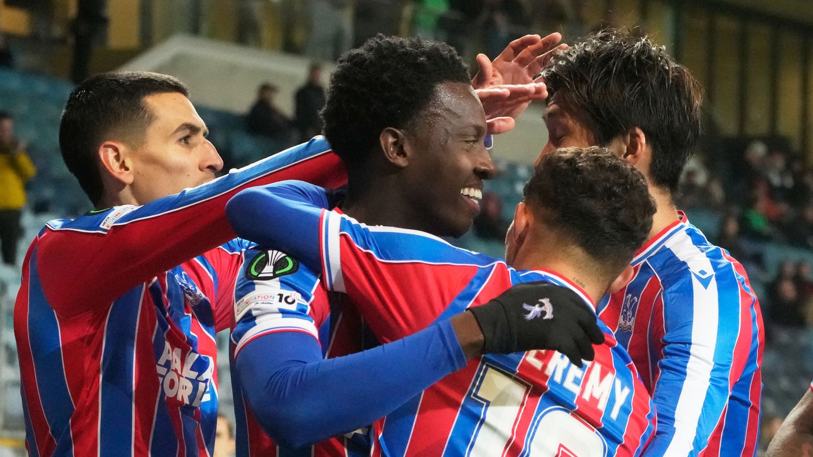
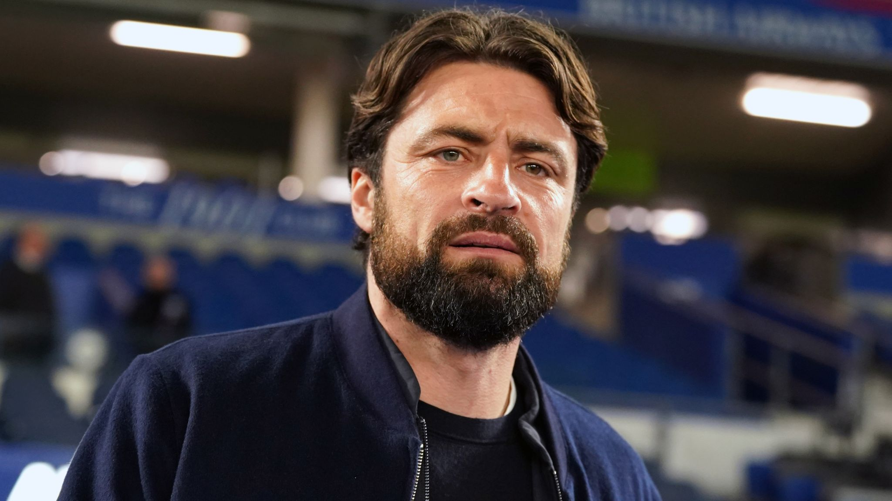
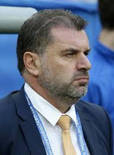

Home
The club Crystal Palace have set a record unbeaten run after a win over Russian side Dynamo Kyiv.
Click to read more
This week most anticipated match is between Liverpool and Manchester United, for more informaton go here

Celtic Football club has released manager Roberts after only 17 matches played.
"I am in the Greatest Form of my life" says Manchester City Striker Erling Haaland, whos run of form has continued after their 1-0 win against Brentford last saturday.

Nottengham Forest Manager, Ange Postecoglou will have talks with upper management about the clubs 7 match winless start, leaving doubts as too his future with the club.
